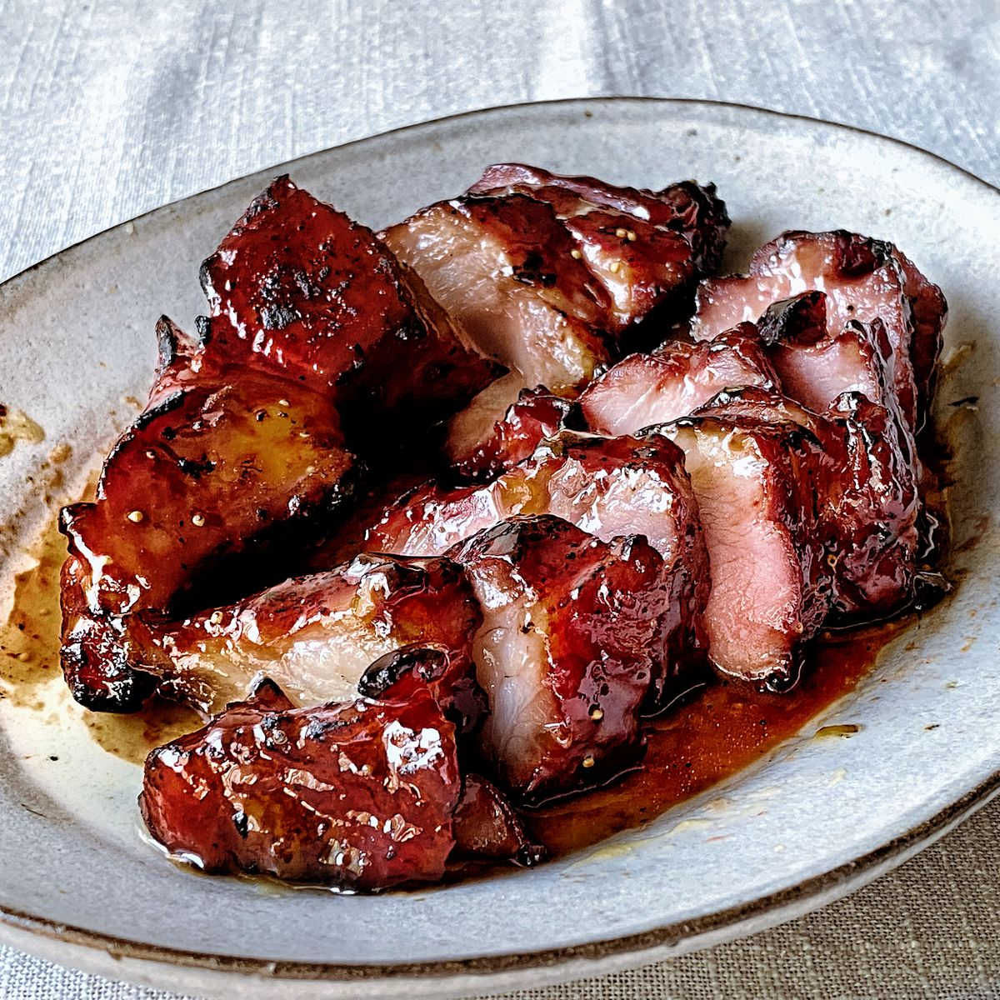

Char Siu

Description
Despite the American origins of Coca-Cola, a main ingredient in this recipe, this is a classic Chinese dish. Coca-Cola imbues the dish with a perfect sweetness and shininess
The cooking process itself is simple and straightforward. You would cook it just like any other chicken stir-fry dish, and add Coca-Cola at the end.
Ingredients
- Garlic
- Ginger
- Soy sauce
- Oyster sauce
- Sugar
- Chicken thighs
- Cooking oil
- Corn starch
- Coca-cola
Steps
- Condiments. Chop the garlic into small chunks, cut ginger into strips
- Marinade. Mix soy sauce, oyster sauce, and sugar in a small bowl and set aside
- Marinate. Pour marinade into chicken, rub, and let side for 30min
- Fry. Stir fry above ingredients in a pan on high fire
- Add coke. Add the Coca-Cola, mix in some corn starch, and let the mixture reduce until you get a thick slurry
Home Page